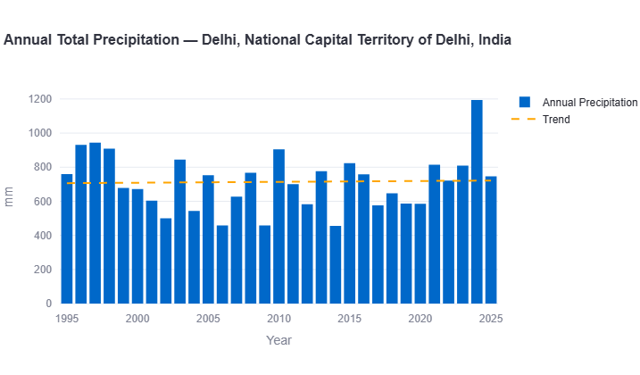
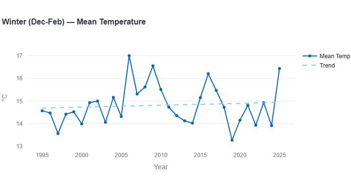
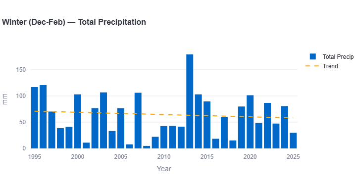
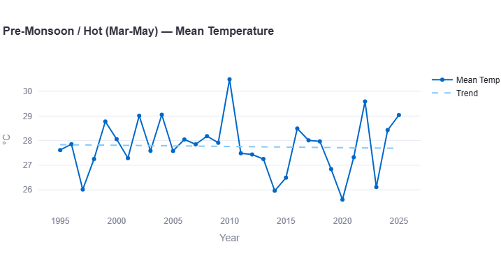
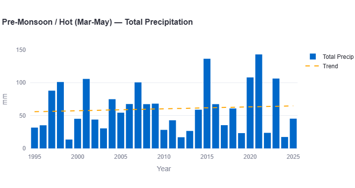
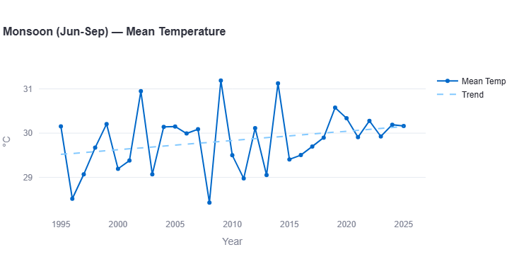
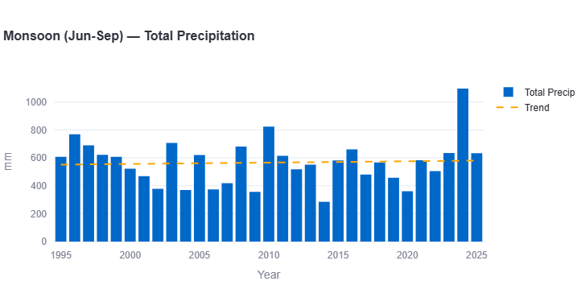
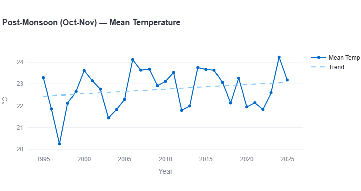
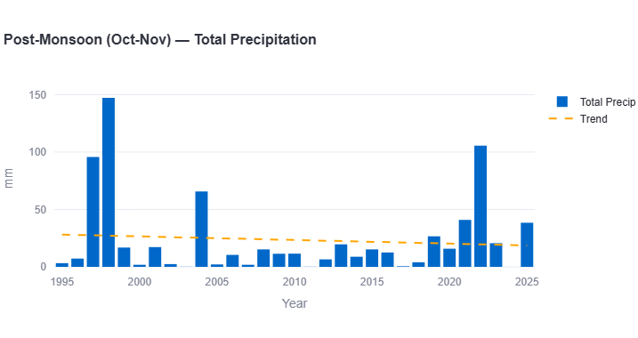

Delhi, India's capital and one of the most populous urban areas on Earth, sits in a climate zone defined by extremes — scorching pre-monsoon heat, a short but intense monsoon, and winters cool enough to require heating. Using three decades of historical reanalysis weather data (1995–2025), this report breaks down how Delhi's temperature, rainfall, and seasonal patterns have actually shifted over time, season by season.
As with our companion report on Karachi, this isn't a forecast — it's a data-backed look back at what's already changed, using the same long-horizon approach that daily weather apps don't offer.
All figures below come from ERA5/ERA5-Land reanalysis data (Copernicus/ECMWF), covering 1995 through 2025, visualized through our interactive Climate Trend Dashboard.
Annual Mean Temperature

Delhi's annual mean temperature record is far noisier year-to-year than Karachi's — a reflection of Delhi's inland, continental climate versus Karachi's coastal moderation. The lowest point in the entire 30-year record comes early, with 1997 dropping to just 23.0°C, a sharp dip from the surrounding years. From there, the data swings substantially from year to year: a run of relatively cool years in the early 2000s, a jump to 25.15°C in 2002, back down to 23.75°C the very next year, then climbing to some of the record's highest points — 25.3°C in 2006 and 25.35°C in 2009.
The most recent years in the dataset show this volatility continuing rather than settling: a dip to 24.05°C in 2023 followed immediately by a sharp rise to 25.3°C in 2025 — among the highest annual averages in the entire record.
Despite this volatility, the underlying trend line is clearly upward, running from around 24.2°C at the start of the record to around 24.6–24.7°C by the end.
Key Figure: Warming Rate
This is a slightly steeper annual warming rate than Karachi's (0.13°C/decade), which fits a broader pattern: inland cities across South Asia tend to show marginally faster average warming than coastal cities, since the ocean has a moderating effect that inland regions don't share. Over 30 years, this trend represents roughly 0.45°C of cumulative warming in Delhi's annual average — a meaningful shift layered on top of a climate that is already one of the most temperature-variable in the region.
Extreme Heat: Days Above 40°C

This is where Delhi's climate profile diverges dramatically from Karachi's. While Karachi's extreme-heat-day count peaked at just 5 days in its worst year, Delhi regularly records 20 to 50+ days per year with maximum temperatures at or above 40°C — an entirely different order of magnitude, reflecting Delhi's landlocked, continental exposure to extreme pre-monsoon and monsoon heat.
The record shows no single clean trend line, but a consistently high and noisy baseline with notable peak years: 2002 and 2010 both saw roughly 50+ days above 40°C — the highest points in the record — while 2020 was comparatively mild with only around 9 days. Other notable high years include 1995 (~43 days), 1998 (~41 days), 2022 (~47 days), and 2024 (~42 days).
This pattern — a consistently high baseline punctuated by extreme peak years rather than a smooth trend — means Delhi's public health and infrastructure planning needs to treat 40°C+ conditions as a recurring, near-annual reality rather than a rare event, with particular preparedness needed for years that push well past the typical range.
Annual Total Precipitation

Delhi's annual rainfall is dramatically higher in absolute terms than Karachi's — unsurprising, given Delhi sits well within the core monsoon belt rather than Karachi's more arid coastal-desert zone. Typical annual totals across most of the 30-year record fall in the 450–950mm range, with the trend line sitting fairly consistently around 700–750mm for most of the period.
One year stands far above the rest: a dramatic spike to nearly 1,200mm around 2024 — by a wide margin the highest annual total in the entire dataset, and visually the most striking feature of the whole chart.
Key Figure: Precipitation Trend
Unlike Karachi, where the precipitation increase was overwhelming and dramatic (+88.7mm/decade), Delhi's overall annual precipitation trend is comparatively modest — the trend line stays relatively flat for most of the three decades, with the 2024 outlier year doing much of the work to pull the long-term average upward. This suggests Delhi's rainfall pattern, while still trending wetter, hasn't (yet) shown the same dramatic intensification seen in Karachi's monsoon-driven totals.
Seasonal & Monsoon Trend
As with Karachi, annual figures can mask important seasonal detail. Breaking Delhi's climate down by the standard South Asian seasonal calendar — Winter (December–February), Pre-Monsoon/Hot (March–May), Monsoon (June–September), and Post-Monsoon (October–November) — reveals where the real shifts are concentrated.
Winter (Dec-Feb)


Delhi's winter temperature record shows a clear, if gradual, warming trend — from a range around 14–15°C in the mid-to-late 1990s to a trend line ending closer to 15°C by 2025. The record's most dramatic point is a sharp spike to 17°C around 2006 — a striking outlier — with other notably warm winters around 2009 (16.5°C) and 2016 (16.2°C). The coldest winter in the record was 2019, dipping to just 13.3°C.
Key Figures: Winter
Warming rate: approximately +0.10°C per decade
Precipitation trend: approximately −10mm per decade (declining)
Winter precipitation shows a genuinely striking outlier: a massive spike to nearly 180mm around 2013 — by far the wettest winter in the 30-year record, roughly double any other year. Outside that single extreme year, most winters bring somewhere between 10mm and 120mm, and the overall trend line slopes gently downward, suggesting Delhi's winters — like Karachi's — may be trending marginally drier overall, despite that one dramatic exception.
Pre-Monsoon / Hot (Mar-May)


Delhi's pre-monsoon season — its hottest stretch of the year — shows temperatures oscillating mostly between 26°C and 29°C, with the trend line staying relatively flat around 27.7–27.9°C across the full three decades. The record's standout year is 2010, spiking to 30.4°C — well above any other year — while the coolest pre-monsoon seasons (around 26°C) appear in 1997, 2013, 2020, and 2023.
Key Figures: Pre-Monsoon
Warming rate: approximately +0.07°C per decade
Precipitation trend: approximately +12mm per decade
Pre-monsoon rainfall shows a clearer upward trend than temperature does in this season — rising from a trend-line baseline near 55mm in the mid-1990s to roughly 65–70mm by 2025. Two years stand out sharply: 2015 and 2021 both saw pre-monsoon totals above 135mm, nearly triple the typical range for this normally dry season — early signs of what appears to be increasingly unseasonal pre-monsoon rainfall.
Monsoon (Jun-Sep)


The monsoon season shows Delhi's clearest, most consistent warming signal of any season — the trend line rises steadily from around 29.5°C in the mid-1990s to roughly 30.2°C by 2025. Notable spikes reach above 31°C in 2002, 2009, and 2014, while 2008 stands out as an unusually cool monsoon at just 28.5°C.
Key Figures: Monsoon
Warming rate: approximately +0.23°C per decade
Precipitation trend: approximately +25mm per decade
This is the fastest-warming season of the year in Delhi — consistent with the same pattern found in Karachi, where the monsoon season warms significantly faster than the annual average. Monsoon rainfall itself is dominated by one extraordinary outlier: a spike to roughly 1,090mm around 2024 (the same year driving the annual precipitation record), nearly double a typical monsoon season's total of 400–700mm. Outside that outlier, the underlying trend is a modest but real increase.
Post-Monsoon (Oct-Nov)


The post-monsoon transition period shows the strongest warming trend of any season in Delhi's entire record — rising from a trend-line baseline near 22.4°C in the mid-1990s to roughly 23.6–23.7°C by 2025. The record's low point is a sharp dip to just 20.3°C in 1996, while the warmest post-monsoon seasons — around 24.1–24.2°C — appear in 2005, 2023, and 2024.
Key Figures: Post-Monsoon
Warming rate: approximately +0.40°C per decade
Precipitation trend: approximately −10mm per decade (declining)
This season's warming rate stands out as unusually steep — nearly double the monsoon season's already-fast rate, and by far the fastest of any season measured in this report, for either city. Post-monsoon rainfall, meanwhile, is dominated by a dramatic early outlier: a spike to nearly 150mm in 1998, the highest point in the entire post-monsoon record, with most other years bringing well under 40mm. This combination — a rapidly warming season with generally declining, but occasionally extreme, rainfall — suggests Delhi's autumn transition period is becoming both hotter and less predictable.
What This Means for Delhi
Taken together, Delhi's seasonal breakdown reveals a climate that is warming fastest in its transition seasons — post-monsoon most of all, followed by monsoon — while winter and pre-monsoon show more modest change. A few practical implications stand out:
- Extreme heat is already a near-annual baseline, not a rare event. With 20-50+ days above 40°C in most years, Delhi's heat health infrastructure needs to be built for sustained, recurring extreme heat exposure — a fundamentally different challenge than Karachi's more clustered, less frequent extreme-heat pattern.
- The post-monsoon season deserves more planning attention. Its unusually fast warming rate — the fastest of any season in either city studied — suggests this transition period may be changing character faster than more closely watched seasons like monsoon.
- Rainfall extremes are becoming more outlier-driven. The dramatic 2024 monsoon and annual precipitation spike illustrates how a single extreme year can now noticeably shift a multi-decade trend line — a pattern worth monitoring for flood infrastructure planning.
- Delhi's inland climate profile means faster average warming than coastal cities. Comparing directly to Karachi's data, Delhi shows a higher annual warming rate and a far higher baseline of extreme-heat days, consistent with its landlocked, continental exposure.
Delhi vs. Karachi: A Quick Comparison
Since both cities have now been analyzed using the same methodology and dataset, a direct comparison is possible:
- Annual warming rate: Delhi (~0.15°C/decade) slightly outpaces Karachi (0.13°C/decade)
- Extreme heat days (≥40°C): Delhi (20-50+ days/year) vastly exceeds Karachi (0-5 days/year) — a reflection of coastal moderation versus continental exposure
- Fastest-warming season: Post-monsoon in Delhi (~0.40°C/decade) versus monsoon in Karachi (0.20°C/decade)
- Annual precipitation trend: Karachi's increase (+88.7mm/decade) is proportionally far steeper than Delhi's (~+35mm/decade), though Delhi's absolute rainfall totals are much higher to begin with
For a third point of comparison, Dhaka warms even faster than either city (~0.30°C/decade) — but unlike both Delhi and Karachi, Dhaka's rainfall trend is declining rather than increasing, a genuinely distinct pattern covered in our full Dhaka report. Colombo, meanwhile, warms at almost the exact same rate as Delhi (~0.15°C/decade) but sees essentially zero extreme-heat days, compared to Delhi's 20-50+ per year.
Search any South Asian city and see its own temperature, rainfall, and monsoon trends, built from 30 years of data.
Open the Interactive Dashboard →Data Source & Methodology
All figures in this report are derived from the Open-Meteo Historical Weather API, built on ERA5 and ERA5-Land reanalysis data produced by the European Centre for Medium-Range Weather Forecasts (ECMWF) through the Copernicus Climate Change Service. Trend rates are estimated by reading the linear regression trend line plotted on each chart across the full 1995–2025 period; where a chart did not display a printed decade-rate figure, the value given here is a closely reasoned visual estimate, marked "approximately."
Seasonal boundaries follow the standard South Asian meteorological convention: Winter (December–February), Pre-Monsoon/Hot (March–May), Monsoon (June–September), and Post-Monsoon (October–November).
As with any reanalysis dataset, figures represent a grid-cell average (roughly 9–25km resolution) rather than a single-point station reading, and may differ from any individual weather station's direct measurements — particularly in Delhi's dense urban core, where local heat-island effects are well documented and can push real-world temperatures higher than the regional reanalysis average suggests.
Frequently Asked Questions
Has Delhi's temperature actually increased over the past 30 years?
Yes. Delhi's annual mean temperature has risen at an estimated rate of approximately 0.15°C per decade since 1995, with the post-monsoon season warming fastest at roughly 0.40°C per decade.
How many days a year does Delhi see temperatures above 40°C?
Typically between 20 and 50+ days per year, based on the 1995-2025 record, with 2002 and 2010 seeing the most extreme-heat days and 2020 among the mildest.
Is Delhi getting more rain?
Modestly, on balance — annual precipitation has increased at an estimated rate of approximately 35mm per decade, though this trend is heavily influenced by a single dramatic outlier year (around 2024) rather than a steady year-on-year increase.
Which season is warming fastest in Delhi?
The post-monsoon season (October-November) shows the fastest warming trend, at an estimated 0.40°C per decade — notably faster even than the monsoon season itself.
How does Delhi's climate trend compare to Karachi's?
Delhi shows a slightly higher annual warming rate than Karachi (approximately 0.15°C/decade versus 0.13°C/decade) and a vastly higher number of extreme-heat days per year, reflecting Delhi's inland, continental climate compared to Karachi's coastal, moderating influence.
Is Delhi's winter getting warmer?
Yes, modestly — an estimated 0.10°C per decade — while winter precipitation shows a slight declining trend overall, despite one dramatic outlier year (around 2013) that was far wetter than any other winter on record.
See how Delhi compares across the region in our South Asia climate trend report, covering all 8 cities in this series.